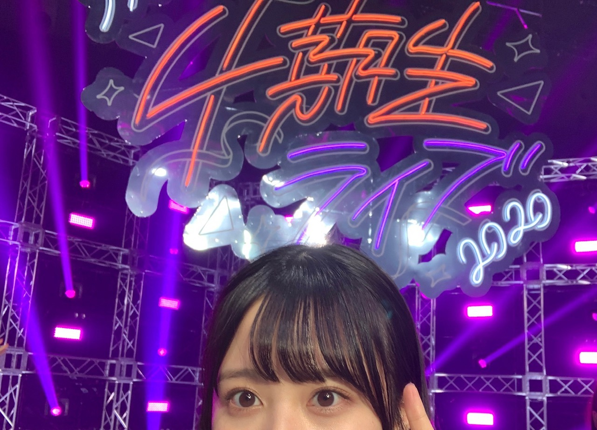
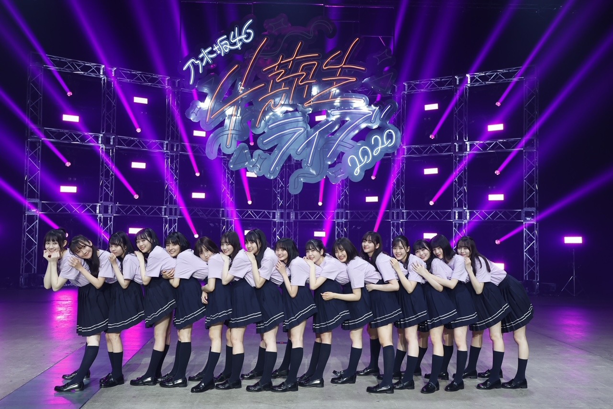
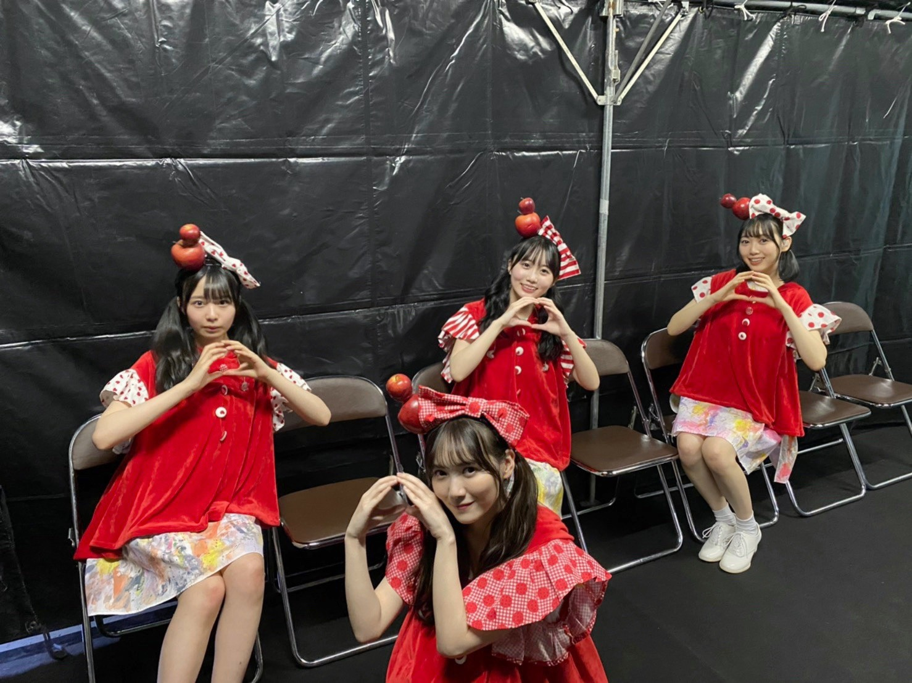
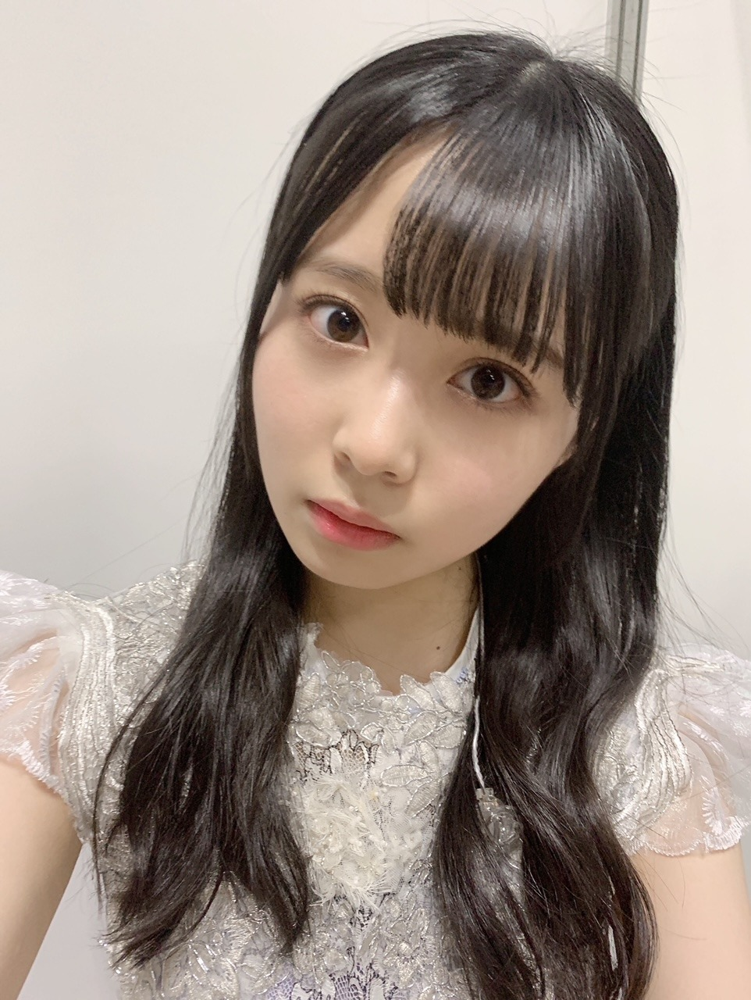
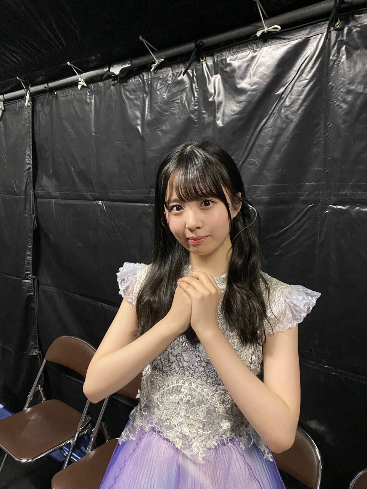

2020/1209Wed私はまだ何もと言うから 。佐藤璃果
こんにちは
乃木坂46 4期生 岩手県出身
佐藤璃果です。


みんなと同じような写真ですが
大事な写真なので！
乃木坂46 4期生ライブ2020
ありがとうございました！︎︎☺︎
私はこのライブに全力で挑んだと
言えることが嬉しいです。
もちろんダンスも歌もまだまだです。
こんなに短期間で色んな曲や
演出を覚えたりするのは初めてと
言っても過言ではありませんでした。
4期のみんなは出来るのに
私たちは出来ないことが多くて、
同じ4期生として
ステージに立たせて頂くのに、
出来ない自分がもどかしくて。
ずっと必死でした。
16人はみんな本当に個性豊かで、
みんながキラキラしていて、眩しくて
その光の中に私は入れているのか、
4期のみんなに何も出来ていなくて申し訳ないなという感情でした。
11人での4期生は
もうすごくキラキラしていて
私たち5人が入ってから
もっとキラキラが増したと
言っていただけるように、
これからまた一つ一つ積み重ねていきたいです！
皆さん、
これからもよろしくお願いしますね！
最後のパジャマでの
16人でのわちゃわちゃ感を見ていたら
ああ、ずっとこの平和な時間が続いてくれればいいのにな
と思いました。
そういうのも含めての
リハでの涙です。
実は本番もステージ袖で泣いてしまうことはあったんですけどね。内緒ですよ内緒
マネージャーさんに助けて頂きました。
感謝です❄️
~~~~~~~~~~~~~~~~~
ユニットコーナーは、
｢白米様｣を
❁まゆたん、矢久保ちゃん、ゆりちゃん❁と
一緒にパフォーマンスさせて頂きました。
私はリハの時、
まゆたんが矢久保ちゃんの事を
本当に可愛いねぇって褒めていて、
それに対して矢久保ちゃんが
テレたり謙遜したり、
ゆりちゃんが、何かをした後に、
ごめんね、ありがとーう。
と言ってくれる
優しい空間が大好きで、ほんの少しの
ユニットコーナーだったのに
このメンツが大好きになりました。
まゆたん、
お洋服とご飯待ってます♡
みんなと歌えて幸せでした！

~~~~~~~~~~~~~~~~

両耳かけゆる巻でした
私はね、白米様から4番目の光の衣装に
着替えている時
リハでも本番でも物凄く感情が動いて、
どうしようって思っていたのですが、
この衣装、なんと西野さんの衣装でした、
加入前から大好きな西野七瀬さんの
衣装でパワー頂きました。
今回こういった状況でのライブで、
皆さんに元気を直接ではなく配信ライブという形でも元気を届けられるという事の
ひとつの証明になればと思います。
16人の大事なメンバー、
沢山支えてくださったマネージャーさん、
ずっと遅くまで頑張ってくださったスタッフさん全ての方に感謝です。
ありがとうございます！！( ¨̮ )
~~~~~~~~~~~~~~~~
4期生楽曲
｢Out of the blue｣
せいらちゃんがセンターです！
せいらちゃんは本当に私達が入りたての頃から気にかけてくれていました。
隣に来て話しかけてくれたり、
色々心配してくれたり、
そんなせいらちゃんが大好きです。
沢山振りの動画を撮らせて貰っちゃって
自分自身の事でもきっと大変だったのに、
快く受け入れてくれてありがとう。
初めて頂いた16人での楽曲、
磨いて磨いてもっといいパフォーマンスをしていけるようにこれからも大事にしていきます。
私はレイちゃんとシンメで
さやか(ちゃん)の隣です！
周りを沢山見て色々な事を吸収出来ればと思います。
｢Out of the blue｣の歌詞も大好きですし、
振り付けも可愛らしくて好きです。
初めての自分の歌割りがあることに感動しました。
皆さんが好きな所も沢山教えて下さい！
素敵な曲を歌わせて頂けることに感謝です。
沢山の方に届きますように。
｢Out of the blue｣
の意味、調べました？私は調べました( ˙º˙ )
❁
4期生ライブ2020
4期生全員が1番輝いていました。
全員がナンバーワンですよね
永遠に記憶に残るライブになりましたか？
私はなりましたよ。
温かいコメントもありがとうございます。
~~~~~~~~~~~~~~~~~~~
明日はるなぴです。
本当本当にお疲れ様！
~~~~~~~~~~~~~~~~~~
皆さんにとって
素敵な1日になりますように。

またね。
#46 りか
コメント(333)
オンラインではあるけどやっと璃果ちゃんに会えるのが今から待ち遠しいな〜！
ミーグリたくさん応募したら全部当たったよ〜
やっと初めて璃果ちゃんと話せる機会ができたわけだから、正直なところ直接会える握手会などで｢はじめまして！｣したかったなぁ(´・ω・｀)って思う気持ちは強いけど、、画面越しでも少しでも気持ちが伝わるといいな！って思います
璃果ちゃんにとっても僕達ファンにとっても、楽しい時間で思い出に残るような、そんな初めてのミーグリにしたいな！って思ってるよ(◍ ´꒳` ◍)b
〜質問〜
○最近、さつま芋を使った食べ物で新たな出会いはありましたか？？
○4期生ライブでダンスなど璃果ちゃんが1番苦労した曲は何ですか？？
○洋服とご飯の約束をまゆたんとしてたけど、まゆたんとおでかけするとしたらどこに行きたいですか？？
寝てないけどおはようございます
実は沙耶香ちゃん推しなんです
でも、りかと話したくてミーグリ応募しちゃいました
結果は18枚も当選しました
入金も済ませました
だから、りかとめっちゃ話せます
沙耶香ちゃんには内緒ね
沙耶香ちゃんとりかの関係好きです
18枚だけど、4日間なので覚えてくれたら
すごく嬉しいです
トモヒラっていいます
よろしくお願いします
今日はまったく日差しがないから
すごく寒いです
ただいまの名古屋の気温は12℃です！
火曜日からは寒波の影響で冬の寒さが
到来みたいです
例年だと今の時期はこれくらいかもだよね
璃果ちゃんは岩手県出身だから
東京の寒さなら大丈夫なのかな？
今日は昨日より少し膝の状態は良いですが
引き続き自宅で静養してます
乃木恋したりマンガ読んでます (*´◒`*)
午後からも頑張ってね 璃果ちゃん
ブログ更新ありがとうございます。
4期生ライブから一週間が経ちましたね。
本当に素敵なライブでした。
璃果ちゃんの全力見届けさせて頂きましたよ！
新曲披露時のせいらちゃんの言葉や11人がみんなにとても優しいのが伝わってきて、思わず涙してしまいました。
今コメントを書いてるこの時も、思い出して目頭が熱くなっています。
去年の今頃は坂道研修生ツアーが無事大成功に終わり、次の情報はまだかまだかと研修生推しの方と待ちわびていたのが懐かしいです。
去年の12月にプレイボーイさんの乃木坂特別号？に掲載された"坂道研修生メモリーズ"は今でも大切にしています。
白米様のメンバー僕もすごく好きです(^^♪
優しい空間が想像できます！
璃果ちゃんの白米様、とっっっても可愛いかったですよ
あとやっぱり璃果ちゃんって優しいなって改めて思いました！
そんな璃果ちゃんをいつまでも応援しています！
あとは何といっても16人での「4番目の光」です！
このパフォーマンスをずっと見たかったんです。
みんな4番目の光になってましたよ(*^^)
そしてそして、なあちゃんの衣装だったんですね！！！！
璃果ちゃんの推しメンである先輩の衣装を着ていたなんて感慨深くて何より嬉しい気持ちでいっぱいでした！
璃果ちゃんもってますね
このライブは僕にとっても最も記憶に残るライブの1つになりました！
もういつでも年が越せそうです(笑)
璃果ちゃん、本当にお疲れ様でした！
最後に質問良いですか？？
〇もうすぐ今年が終わりますね。璃果ちゃんにとってどんな1年でしたか？？
〇璃果ちゃんのミーグリに備えて滑舌が良くなる特訓をしようと思ってるんですが、何か良い方法ありませんか？？(^^;)
〇岩手県ではもう雪が降っていそうですか？？
それではブログ更新お疲れ様でした。
次回は47回目のブログ更新ですね！
しぃなちゃんですね(#^^#)
まこと
それにこちらこそ温かいブログをいつもありがとう！
4期生ライブ本当に本当にお疲れ様でした❗️
4期生キラキラです！かわいくてかっこよくて最高の16人！！
初めて4期16人でパフォーマンスして緊張もあったと思うし泣いてた話聞いてほんっとよく頑張ったねって伝えたい！！
璃果ちゃんいっぱい輝いてたよ！！
あとミーグリいっっぱい当てたから待ってて〜
楽しみ！！
良かったら名前覚えててくれたら嬉しいな！
ーーーーーー質問ーーーーーー
璃果サンタ何かくれるならなにくれる〜？
記念すべき（？）46回目のブログ更新ありがとうございます！
4期生ライブから1週間経った今でも余韻に浸る、そんな今日この頃です。
璃果ちゃんから見た4期生ライブの感想。
言葉の1つ1つに想いがこもっていて、心が震えました。
璃果ちゃんの"全力"を自分はしっかり見きれたのか、考えてみるとまだまだ見きれてないのかなと感じました。
でもまだこれから沢山璃果ちゃんを応援していく中で、1つ1つ向き合っていきたいなって、改めて強く思いました。
たまには強がらなくてもいいのかなと思って書いてみましたが
1人の拙い言葉なので、軽く流してください…
本当にいつもありがとうございます。
一緒に強くなりたいです。
┈┈┈┈┈┈┈┈┈┈
無観客ライブ、やっぱりファンの熱が直接届けられないのが悔しいなって
でもキラキラアイドルな璃果ちゃんを見れて、心が高揚感に溢れていることがとても嬉しいです…！
4期生みんなが「ナンバーワンでオンリーワン」でした
┈┈┈┈┈┈┈┈┈┈
これから沢山の衣装、先輩の物もあれば自分だけの物もあるかもしれないですね…！
いつか璃果ちゃんの衣装が未来の後輩に渡る日が来るのかなぁ…なんてね。
4番目の光の歌詞「今、輝こう〜」
自分は「今」の璃果ちゃんをずっと応援しています。
┈┈┈┈┈┈┈┈┈┈
新曲の好きな所は、サビの前になおちゃんゆりちゃんの間に飛び込んで腰を当ててるりかちゃんが可愛い所です！
この曲、末永く愛していける気がします…笑
1つだけ質問します！
もうすぐクリスマスですが、璃果ちゃんはどんな料理を食べていましたか？
自分はクリスマスと言えば、チキンでした！ケンタッキーの！（倒置法）
今日も頑張る璃果ちゃんが大好きです！
ミーグリを楽しみに
また明日も歩き出しましょう！
それでは！
またね。
ノギスキの予告動画見たよ
早く璃果ちゃんのチャイナドレス姿見たいな
髪型と凄く似合ってるよね
ノギスキ待ち遠しいな
大好きだよ 璃果ちゃん
4期生ライブ以降ほんとに璃果ちゃんのことがめちゃくちゃ気になってて時間があるとき璃果ちゃんのブログを読んでて思ったんだけど、璃果ちゃんの書く言葉がすごく好きだなって
素朴な感じはするけどすごく暖かくて真っ直ぐで、それで時折おちゃめな感じがして
まだ璃果ちゃんのことをよくは知らないけど璃果ちゃんってこういう子なのかな？って伝わってきた気がする
璃果ちゃんの文を読んでてお話してみたいなって
ステージの上の璃果ちゃんを見て心掴まれて、その璃果ちゃんの書く言葉にすごく惹かれた
まだ全然知らなくてもこんなに魅力的なんだからもっと知っていったらもっと好きになるだろうなって
4期生ライブ以降璃果ちゃんのこと調べたりしてる時間がほんとに楽しいし幸せ！
ミーグリもとったよ！璃果ちゃんと話せるのがほんとに楽しみ！
たくさん楽しみなこと楽しいことをくれてありがとう！
4期生ライブについて書いてくれてありがとうー！
"全力で挑んだ"って言えるのは本当に頑張った証だと思うし、最高にカッコイイ！！！本当におつかれさま！！！！
4期生ライブ。
私の中ではりかちゃんが1番輝いていましたよ。
細かい表情や仕草が素敵だな、凄いなと思いました。
白米様のお写真ありがとうー
見ることが出来て嬉しいです♪
可愛い！！！！！！！
Out of the blueは新4期生が加入した時からよく気にかけてくれていた早川聖来ちゃんで安心しました。
ねこっぽい振り付けが可愛いですね^._.^♪
-------❁ ❁ ❁-------
七瀬さんの衣装〜！！！凄い！！！
良かったねー！！！！！！
推しメンの衣装を着れるとか夢みたいじゃない？！
それは力貰えるはずだヽ(*´∀｀)ノ
衣装とても似合ってるよ♡
-------❁ ❁ ❁-------
永遠に記憶に残るライブになりましたよ♪
最高の思い出です！！！
またいつか4期生でライブして欲しいな〜！
今後りかちゃんがパフォーマンスしてみたい曲はありますか？
明日もりかちゃんにとって素敵な一年になりますように☆
またね❁⃘*.ﾟ
こっちはくもり
今日から寒くなるね
体調気をつけようね
昨日一足先に綺良ちゃんに
初めましてしたよ
私のことは他の子から
聞いたって
今日はブログ楽しみに
してるね
一週間元気にがんばろー
またね
今日はノギスキだね！
楽しみ！
おはよう
ブログありがとねー！
４期ライブ
まだまだ余韻冷めないですね！
新曲がまたじわじわとステキな楽曲で
ほんとライブ披露がたのしみでなりません！！
りかりんも全力投球で魅せてくだされー！！
ノギスキも秀逸でした！！
チャイナドレスがまたよく似合う！！
私だったらまあちょろく撃沈ですな！(๑˃̵ᴗ˂̵)
クリスマスに正月に
イベント盛り沢山だし
りかりんも精いっぱい楽しんでや〜
楽しむりかりんがいっちゃんかわいいすからねー（╹◡╹）♡
みーぐりはやくこいこい
と念じてまーす(^ ^)
来年だけど笑
ではでは
今日もはりきってまいりましょーー！！
ヽ(´▽｀)/
まずは4期生ライブお疲れ様～！！
Overtureが流れる瞬間ほんと好きなんだよね！よしっ！始まる！！盛り上がるぞ～！！って一気にギアが何段階も上がるあの感覚。何度経験しても鳥肌が立つな～。
璃果ちゃんいっぱい見てたよ！楽曲ごとに可愛い表情だったりカッコイイ表情だったり、璃果ちゃんの初めてみる表情ばかりでなんだか涙が出そうになっちゃいました笑
リハーサル期間めちゃめちゃ頑張ったのかなとか色々想像してたら何も知らないくせに感動しちゃって、それくらい素晴らしいパフォーマンスでした！！
ユニットコーナーでは、あらかじめメンバーだけが発表されてて4人組だったから何歌うんだろう？って全然想像つかなくて、4人組の楽曲って乃木坂に割とあるからすごく楽しみにしてました！そしたらまさかの白米様！！！
もーう！！璃果ちゃんあの衣装めっちゃ似合ってるし、みんなかわいすぎるし、最高すぎました！！白米様は予想外だったな～笑
またどこかで披露する機会があるといいね！
なんかライブをみてて4期生みんなほんとに仲良くなったんだな～っていうのがすごい伝わって、ライブ中の璃果ちゃんはものすごく楽しそうにしててみてるこっちまで楽しくなるような、そんなライブでした！
特に、アフター配信では仲良しなのが伝わりすぎて、幸せ空間すぎるな～って思いながら見てました！ゆりちゃんとパジャマおそろいだよね～っていう会話とか癒しでした！
次は配信じゃなくて、会場でみたいなって改めて思いました！
璃果ちゃんももう4期生の光のなかのひとりだよ！これからも私たちファンのことを照らしてね！！
本当にお疲れ様～！！
またコメントするね！！
あや
コメントする

PROFILE
新4期生リレー
202104
| SUN | MON | TUE | WED | THU | FRI | SAT |
|---|---|---|---|---|---|---|
| 1 | 2 | 3 | ||||
| 4 | 5 | 6 | 7 | 8 | 9 | 10 |
| 11 | 12 | 13 | 14 | 15 | 16 | 17 |
| 18 | 19 | 20 | 21 | 22 | 23 | 24 |
| 25 | 26 | 27 | 28 | 29 | 30 | |

来年のバースデーライブにも
活かされるんじゃないかな。
あと大晦日の紅白の前にステージに
立てた事も良かったと思うよ。
全員がナンバーワンですよね。
その通りだけど、オンリーワンは
璃果ちゃんだけです。
Out of the Blue の意味は
「突然に〜」じゃなかったかな？
後で調べようかと思います（笑）
んだば!!